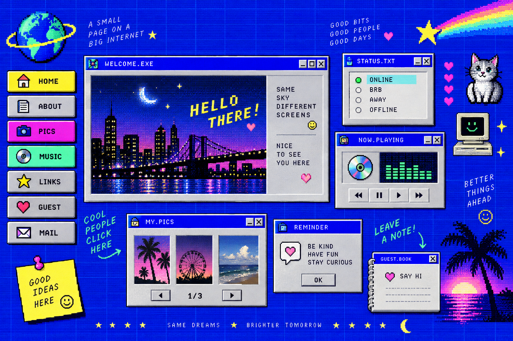

062 / 219
WORK / PROMPT DECODE
像素互联网 1999 Retro Web
完整提示词 Prompt
nostalgic 1990s personal website interface as a polished visual concept, deep cobalt blue tiled web background, beveled buttons, pixel icons, tiny badges, retro desktop windows, colorful navigation labels, playful collage of old web elements, Y2K internet culture, pixel art mixed with clean art direction, cobalt blue electric yellow magenta mint green white, scanlines, pixel dithering, low-resolution bitmap texture, no modern corporate dashboard, no browser chrome, no watermark
备注
重点：像素图标、斜面按钮、CRT 扫描线和早期个人主页的密集拼贴。